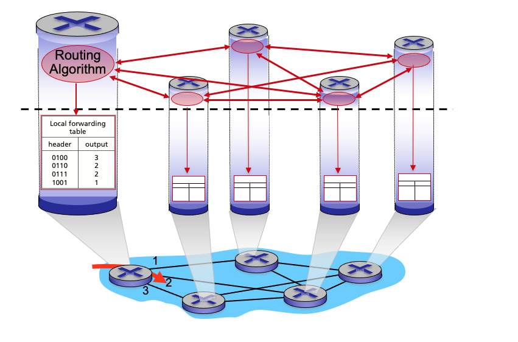
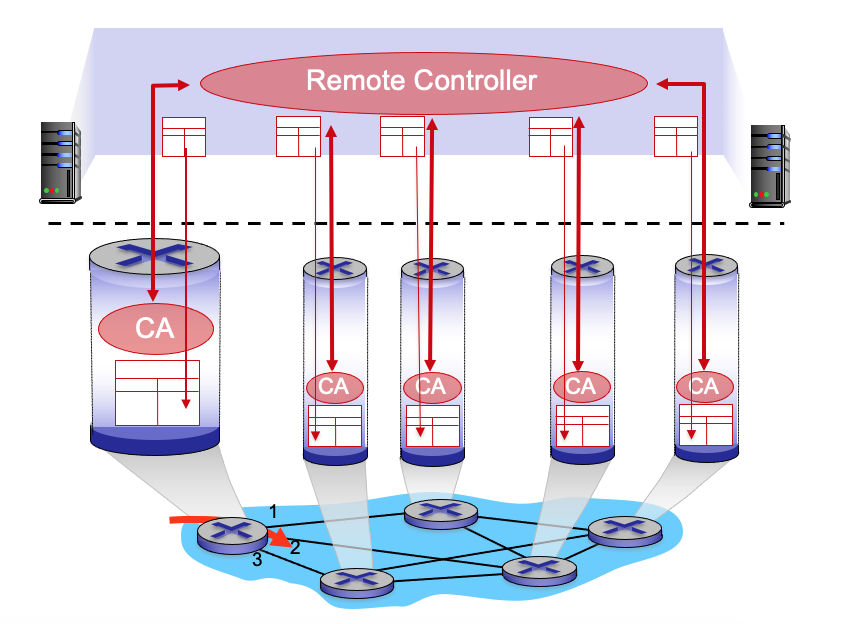

Routing Statis & Dinamis
Pertemuan 9
Materi: Konsep, Algoritma, RIP, OSPF, BGP
Referensi Utama: Kurose & Ross — Computer Networking (8th Ed)
Dosen Pengampu:
Introduction: Network Layer Control Plane
Chapter 5 – Control Plane Roadmap
Topik yang dibahas pada bab ini:
- Introduction: routing protocols (link state, distance vector)
- Intra-ISP routing: OSPF
- Routing among ISPs: BGP
- SDN control plane
- Internet Control Message Protocol (ICMP)
- Network management, configuration: SNMP, NETCONF/YANG

Two Approaches to Network Control Plane
Dua pendekatan utama dalam menyusun network control plane:
Komponen routing algorithm berjalan di setiap router secara mandiri dan saling berinteraksi.
Remote controller yang menghitung dan menginstall forwarding table di setiap router.
Fungsi Network Layer: Forwarding (data plane) → memindahkan paket; Routing (control plane) → menentukan rute.
Per-Router Control Plane
Setiap router memiliki komponen routing algorithm-nya sendiri. Router-router saling berinteraksi satu sama lain untuk membangun dan memperbarui forwarding table-nya.
Karakteristik:
✔ Desentralisasi – setiap router autonomous
✔
Distribusi informasi routing antar router (tanpa controller terpusat)
Software-Defined Networking (SDN) Control Plane
Remote Controller terpusat yang menghitung dan menginstall forwarding table di setiap router.
- Controller terpisah dari data plane (router hanya meneruskan paket).
- Router hanya bertindak sebagai packet forwarder (CA = Control Agent).
- Forwarding table dikomputasi secara terpusat dan didistribusikan ke seluruh router.
Per-Router vs SDN Control Plane: Perbandingan Visual
Perbandingan arsitektur per-router control plane (kiri) dengan SDN control plane (kanan).


Peta Pembelajaran Kita
Setelah memahami dua paradigma utama (Tradisional vs SDN), bagaimana fokus kita di kelas ini?
Fokus Pertemuan Ini
Per-Router Control PlaneKita akan membedah secara mendalam algoritma klasik yang menjadi tulang punggung Internet saat ini: OSPF (Link State) dan BGP (Distance Vector).
Fokus Pertemuan Pekan Sebelum nya
SDN (Software-Defined Networking)Topik Controller Terpusat dan OpenFlow akan kita jadikan bahasan khusus secara komprehensif pada pertemuan selanjutnya.
Routing Protocols: Goal
Tujuan: Menentukan jalur ("good paths/routes") dari host pengirim ke host penerima, melalui jaringan router.
- Path: Urutan router yang dilintasi paket dari sumber ke tujuan.
- "Good": Biaya terkecil (least cost), tercepat, paling tidak padat (least congested).
- Routing adalah salah satu tantangan utama ("top-10") dalam jaringan komputer.
• Routing Algorithm → menghitung jalur terbaik
• Routing Protocol → cara router bertukar info
• Routing Table → hasil keputusan routing
Graph Abstraction: Biaya Link
Jaringan dimodelkan sebagai Graf G = (N, E):
- N = {u, v, w, x, y, z}
- c(a,b) = biaya link a ke b
- c(w,z)=5, c(u,z)=∞ (tidak terhubung)
- Biaya bisa = bandwidth⁻¹, atau congestion⁻¹
u–v:2, u–x:1, u-w:5, v–w:3, v–x:2,
x–w:3, x–y:1, w–y:1, w–z:5, y–z:2
Klasifikasi Algoritma Routing
- Global: Semua router punya info topologi lengkap → Link State algorithms
- Desentralisasi: Router hanya tahu cost ke tetangga langsung, bertukar info iteratif → Distance Vector algorithms
- Statis: Rute berubah sangat lambat (konfigurasi manual).
- Dinamis: Rute berubah cepat, via periodic updates atau respons perubahan link cost.
Routing Protocols: Link State (Dijkstra)
Dijkstra's Link-State Routing Algorithm
Sifat: Terpusat (centralized) – topologi jaringan dan biaya link diketahui oleh semua node via "link state broadcast".
Menghasilkan least-cost paths dari satu node sumber ke semua node tujuan → menghasilkan forwarding table untuk node tersebut.
c(x,y) = biaya link langsung dari x ke y; = ∞ jika
bukan tetangga langsungD(v) = estimasi biaya least-cost-path dari
sumber ke vp(v) = predecessor node sebelum v di jalur dari
sumberN' = himpunan node yang least-cost-path-nya sudah
definitif diketahui
Dijkstra's Algorithm: Pseudocode
Initialization:
N' = {u} /* sumber adalah u */
for all nodes v:
if v adjacent to u → D(v) = c(u,v)
else D(v) = ∞
Loop:
1. find w not in N' such that D(w) is minimum
2. add w to N'
3. update D(v) for all v adjacent to w and not in N':
D(v) = min(D(v), D(w) + c(w,v))
until all nodes in N'
Dijkstra: Contoh Iterasi Step-by-Step (Graf u,v,w,x,y,z)
| Step | N' | D(v),p(v) | D(w),p(w) | D(x),p(x) | D(y),p(y) | D(z),p(z) |
|---|---|---|---|---|---|---|
| 0 | u | 2, u | 5, u | 1, u ✓ | ∞ | ∞ |
| 1 | u, x | 2, u | 4, x | — | 2, x ✓ | ∞ |
| 2 | u, x, y | 2,u ✓ | 3, y | — | — | 4, y |
| 3 | u, x, y, v | — | 3, y ✓ | — | — | 4, y |
| 4 | u,x,y,v,w | — | — | — | — | 4, y ✓ |
| 5 | u,x,y,v,w,z | ✅ Semua node diproses – algoritma selesai! | ||||
| Tujuan | outgoing link |
|---|---|
| v | (u,v) |
| x | (u,x) |
| y | (u,x) |
| w | (u,x) |
| x | (u,x) |
Dijkstra: Hasil Forwarding Table & Least-Cost-Path Tree
Setelah algoritma selesai, dari node u, diperoleh:
| Destination | Outgoing Link |
|---|---|
| v | (u,x) |
| x | (u,x) |
| y | (u,x) |
| w | (u,x) |
| z | (u,x) |
u → x (cost 1)
u → x → v (cost 2, rute u-v langsung sama)
u → x → y (cost 2)
u → x → y → w (cost 3)
u → x → y → z (cost 4)
Dijkstra: Contoh Kedua (Graf Berbeda)
Graf: u–v (7), u–w (3), u–x (5), w–v (11/w), w–x (6/w), x–v (14/x), x–y (9/x), v–y (8/v), v–z (7/v), y–z (2/y)
| Step | N' | D(v) | D(w) | D(x) | D(y) | D(z) |
|---|---|---|---|---|---|---|
| 0 | u | 7,u | 3,u✓ | 5,u | ∞ | ∞ |
| 1 | u,w | 7,u | — | 5,u✓ | ∞ | ∞ |
| 2 | u,w,x | 7,u✓ | — | — | 14,x | ∞ |
| 3 | u,w,x,v | — | — | — | 11,w✓ | 14,x |
| 4 | u,w,x,v,y | — | — | — | — | 13,y✓ |
Catatan: Bisa ada tie (biaya sama) – bisa dipecah sembarang. Predecessor node ditelusuri untuk membangun least-cost-path tree.
Dijkstra's Algorithm: Discussion
- n node: setiap iterasi perlu cek semua node w yang belum di N' → n(n+1)/2 perbandingan → O(n²)
- Implementasi lebih efisien (heap): O(n log n)
- Setiap router harus broadcast info link state ke n router lainnya.
- Efficient broadcast: O(n) link crossings per pesan.
- Setiap pesan router melintasi O(n) link → total: O(n²) message complexity.
Dijkstra: Oscillations (Osilasi Rute)
Ketika biaya link bergantung pada volume trafik, bisa terjadi route oscillations (rute berubah terus menerus).
Skenario: routing ke tujuan a, trafik masuk di d, c, e dengan rate 1, e(<1), 1. Link cost bergantung pada traffic load.
Routing baru dihitung → menyebabkan perubahan beban → routing berubah lagi → dst (loop osilasi tidak konvergen).
Solusi: Router tidak sinkronkan waktu perhitungan routing; gunakan mekanisme anti-osilasi (misal: OSPF dengan delay sebelum re-advertisement).
💡 Latihan: Dijkstra's Algorithm
Nodes: A, B, C, D, E. Link costs: A-B=4, A-C=2, B-C=1, B-D=5, C-D=8, C-E=10, D-E=2.
Hitung jalur terpendek dari A ke semua node lainnya menggunakan Dijkstra's Algorithm.
| Step | N' | D(B) | D(C) | D(D) | D(E) |
|---|---|---|---|---|---|
| 0 | A | 4,A | 2,A✓ | ∞ | ∞ |
| 1 | A,C | 3,C✓ | — | 10,C | 12,C |
| 2 | A,C,B | — | — | 8,B✓ | 12,C |
| 3 | A,C,B,D | — | — | — | 10,D✓ |
Jalur terpendek: A→B: A-C-B (cost 3), A→D: A-C-B-D (cost 8), A→E: A-C-B-D-E (cost 10)
⚠️ Diskusi Kritis: Jebakan Algoritma Dijkstra
Kita telah berhasil mensimulasikan Dijkstra dengan sangat baik. Namun, sebagai Network Engineer masa depan, Anda harus tahu kapan sebuah alat akan rusak/gagal.
Apa yang terjadi pada Algoritma Dijkstra jika operator jaringan (karena *human error* atau konfigurasi khusus) memberikan *cost* bernilai NEGATIF (-1) pada salah satu *link* di jaringan?
Diskusikan dengan teman di sebelah Anda selama 1 menit!
Algoritma Dijkstra akan GAGAL (menghasilkan rute yang salah) atau terjebak dalam infinite loop karena Dijkstra selalu berasumsi bahwa "menambah *hop/link* pasti menambah *cost* (tidak mungkin mengurangi)".
Solusi: Inilah mengapa algoritma Distance Vector (berbasis Bellman-Ford) sangat krusial, karena secara matematis algoritma Bellman-Ford mampu menangani *edge* bernilai negatif.
Routing Protocols: Distance Vector (Bellman-Ford)
Distance Vector Algorithm – Persamaan Bellman-Ford
Berdasarkan Bellman-Ford (BF) equation – dynamic programming:
- Dx(y) = biaya least-cost-path dari x ke y
- c(x,v) = biaya link langsung dari x ke tetangga v
- Dv(y) = estimasi least-cost-path dari v ke y
- min diambil atas semua tetangga v dari x
Bellman-Ford: Contoh Perhitungan
Graf: u–v(2), u–w(5), u–x(1), v–w(3), x–w(3), x–y(1), w–y(1), w–z(5), y–z(2)
Misalkan node u menghitung Du(z). Tetangga u adalah: x, v, w.
Diketahui dari tetangga: Dv(z)=5, Dw(z)=3, Dx(z)=3
= min { 2 + 5, 1 + 3, 5 + 3 }
= min { 7, 4, 8 } = 4
Node x adalah node yang menghasilkan minimum → x adalah next hop menuju z dari u.
Distance Vector Algorithm: Key Idea
Key idea: Dari waktu ke waktu, setiap node mengirim distance vector-nya ke tetangga.
Dx(y) ← minv {c(x,v) + Dv(y)} untuk setiap
y ∈ NDengan kondisi minor yang alami, estimasi Dx(y) akan konvergen ke nilai aktual dx(y).
Distance Vector: Karakteristik Algoritma
Iterasi lokal dipicu oleh:
- Perubahan biaya link lokal
- Pesan DV update dari tetangga
- Setiap node hanya notifikasi tetangga jika DV-nya berubah.
- Tetangga notifikasi tetangga mereka – hanya jika perlu.
- Tidak ada notifikasi = tidak ada aksi!
Distance Vector: Contoh (t=0, State Awal)
Jaringan 3×3 grid: a–b–c / d–e–f / g–h–i, dengan link cost mostly 1 kecuali a–b=8.
Pada t=0: setiap node hanya tahu jarak ke tetangga langsungnya.
Da(a)=0, Da(b)=8, Da(c)=∞, Da(d)=1, Da(e)=∞, Da(f)=∞, Da(g)=∞, Da(h)=∞, Da(i)=∞
Semua node mengirimkan DV mereka ke tetangga-tetangga mereka.
Distance Vector: Proses Iterasi (t=1, t=2, dst.)
Pada setiap iterasi, semua node melakukan 3 hal secara bersamaan:
Terima DV dari semua tetangga
Hitung ulang DV lokal menggunakan BF
Kirim DV baru ke semua tetangga
State node c pada t=0 menyebar secara bertahap:
t=1 → mencapai node 1 hop dari c (b)
t=2 → mencapai node 2 hop dari c (a, e)
t=3 → mencapai node 3 hop dari c (d, f, h)
t=4 → mencapai node 4 hop dari c (g, i)
Distance Vector: Detail Komputasi di Node b
Da(a)=0, Da(b)=8,
Da(d)=1, rest=∞
Dc(b)=1, Dc(c)=0,
rest=∞
De(b)=1, De(d)=1,
De(e)=0, De(f)=1, De(h)=1
Db(a) = min{c(b,a)+Da(a), c(b,c)+Dc(a), c(b,e)+De(a)} = min{8+0, 1+∞, 1+∞} = 8
Db(c) = min{c(b,a)+Da(c), c(b,c)+Dc(c), c(b,e)+De(c)} = min{∞, 1+0, ∞ } = 1
Db(d) = min{c(b,a)+Da(d), c(b,c)+Dc(d), c(b,e)+De(d)} = min{8+1, 1+∞, 1+1} = 2
Db(f) = min{c(b,a)+Da(f), c(b,c)+Dc(f), c(b,e)+De(f)} = min{∞, ∞, 1+1} = 2
Db(h) = min{c(b,a)+Da(h), c(b,c)+Dc(h), c(b,e)+De(h)} = min{∞, ∞, 1+1} = 2
Distance Vector: Hasil DV Baru Node b
| Dest | Cost |
|---|---|
| a | 8 (direct) |
| c | 1 (direct) |
| e | 1 (direct) |
| others | ∞ |
| Dest | Cost | Via |
|---|---|---|
| a | 8 | a (direct) |
| c | 1 | c (direct) |
| d | 2 ✨baru | e |
| e | 1 | e (direct) |
| f | 2 ✨baru | e |
| h | 2 ✨baru | e |
Distance Vector: Komputasi Node e (t=1)
Node e menerima DV dari tetangganya: b, d, f, h. Menghitung ulang DV-nya dengan BF.
DV dari b: Db(a)=8, Db(c)=1, rest=∞
DV dari d: Dd(a)=1, Dd(g)=1, Dd(d)=0, rest=∞
DV dari f: Df(c)=1, Df(f)=0, Df(i)=1, rest=∞
DV dari h: Dh(g)=1, Dh(h)=0, Dh(i)=1, rest=∞
Q: Berapakah DV baru yang dihitung node e pada t=1?
Distance Vector: Penyebaran Informasi State
Informasi state sebuah node menyebar secara bertahap seperti gelombang:
State c hanya ada di c
State c mempengaruhi komputasi di b (1 hop)
State c mempengaruhi komputasi di a, e (2 hop)
State c mempengaruhi d, f, h (3 hop)
State c mempengaruhi g, i (4 hop)
Tidak ada perubahan → algoritma berhenti
Distance Vector: Link Cost Changes – Good News Travels Fast
Topologi: x–y (1), y–z (4→1). Scenario: biaya link y–z berubah dari 4 menjadi 1.
- t₀: y deteksi perubahan link cost, update DV, beritahu tetangga.
- t₁: z terima update dari y, hitung ulang DV, kirim ke tetangga.
- t₂: y terima update z, hitung ulang DV → tidak berubah → tidak kirim notifikasi.
"Good news travels fast" – kabar baik (biaya turun) menyebar cepat, biasanya konvergen dalam beberapa iterasi.
Sebaliknya, "bad news" (biaya naik) menyebar lambat dan bisa memicu masalah!
Distance Vector: Count-to-Infinity Problem
Topologi: x–y (1), y–z (4→60). Ketika biaya y–z naik dari 4 ke 60:
- y melihat link ke x punya biaya baru 60. Tapi z bilang punya jalur ke x via y dengan biaya 5. Jadi y hitung: biaya baru ke x = 6 via z. Notif z.
- z menerima update dari y: jalur ke x via y sekarang cost 6. z hitung: biaya z ke x = 7 via y. Notif y.
- y terima: z ke x cost 7 → y hitung: y ke x via z = 8. Notif z.
- z: via y = 9... dan seterusnya...
Rute loop (y→z→y→z...) menyebabkan cost terus naik hingga infinity.
Solusi: Poisoned Reverse, Split Horizon, atau batasan hop (RIP max 15 hop).
Perbandingan: Link State vs Distance Vector
| Aspek | Link State (LS) | Distance Vector (DV) |
|---|---|---|
| Message Complexity | n router, O(n²) pesan | Exchange antar tetangga; waktu konvergen bervariasi |
| Speed of Convergence | O(n²) algo, O(n²) pesan; bisa osilasi | Waktu konvergen bervariasi; bisa routing loops, count-to-infinity |
| Robustness | Router bisa advertise biaya link salah; setiap router hanya hitung tabel sendiri – error terisolasi | Router bisa advertise biaya path salah ("I have zero cost path everywhere") → black-holing; error menyebar ke seluruh jaringan |
💡 Latihan & Analisis: Count-to-Infinity
Saat x-z jadi 60, router x beralih rutekan ke z via y (karena y lapor bisa ke z cost 1). Tapi y ke z sebenarnya lewat x! (y pikir x masih punya cost 4 ke z). Apa yang terjadi?
1. Poisoned Reverse: Jika y rutekan ke z melalui x, maka y berbohong ke x dengan mengatakan jarak y ke z adalah ∞ (sehingga x tak akan rutekan balik ke y).
2. Split Horizon: y tidak mengirim info rute z kembali ke x.
Intra-ISP Routing: OSPF
Routing Skalabilitas: Idealisasi vs Realita
Studi routing selama ini mengasumsikan kondisi ideal:
→ Semua router identik
→ Jaringan
"flat" (datar)
Namun kenyataannya tidak demikian di internet!
- Internet punya miliaran tujuan – mustahil semua router menyimpannya dalam tabel routing.
- Update tabel routing akan membanjiri link!
- Internet adalah "network of networks".
- Setiap admin jaringan mungkin ingin kontrol routing di jaringannya sendiri.
Internet Approach to Scalable Routing: Autonomous Systems
Router diaggregasi ke dalam region yang disebut Autonomous Systems (AS), juga dikenal sebagai "domain".
Routing antar router dalam AS yang sama. Semua router di AS harus jalankan protokol intra-domain yang sama. Router di AS berbeda bisa jalankan protokol berbeda.
Routing antar AS. Dilakukan oleh gateway routers di tepi AS-nya (link ke router di AS lain).
Interconnected ASes
Topologi: AS1, AS2, AS3 saling terhubung via gateway router di tepi masing-masing AS.
- Intra-AS routing: menentukan entri untuk tujuan di dalam AS.
- Inter-AS & Intra-AS: menentukan entri untuk tujuan di luar AS.
- Forwarding table dikonfigurasi oleh algoritma routing intra- DAN inter-AS.
Inter-AS Routing: Perannya dalam Forwarding Intradomain
Misalkan router di AS1 menerima datagram tujuan di luar AS1.
Inter-domain routing AS1 harus:
- Pelajari tujuan mana yang reachable via AS2, dan mana yang via AS3.
- Sebarkan info reachability ke semua router di AS1.
- Router forward paket ke gateway router yang tepat di AS1.
Intra-AS Routing Protocols
Protokol intra-AS yang paling umum:
| Protokol | Tipe | Keterangan |
|---|---|---|
| RIP | Distance Vector | DV klasik, exchange tiap 30 detik, sudah jarang digunakan [RFC 1723] |
| EIGRP | DV-based | Sebelumnya Cisco-proprietary, menjadi open di 2013 [RFC 7868] |
| OSPF | Link State | Open Shortest Path First, link-state routing [RFC 2328] |
| IS-IS | Link State | ISO standard, esensinya sama dengan OSPF |
OSPF: Open Shortest Path First
Open: publicly available (RFC 2328).
- Classic link-state: setiap router flood OSPF link-state advertisements (LSA) ke semua router di seluruh AS (langsung via IP, bukan TCP/UDP).
- Multiple link cost metrics: bandwidth, delay.
- Setiap router punya topologi lengkap, gunakan Dijkstra's algorithm untuk hitung forwarding table.
- Security: semua pesan OSPF diautentikasi (mencegah intrusi berbahaya).
Hierarchical OSPF
Two-level hierarchy: Local area + Backbone.
LSA di-flood hanya dalam area atau backbone – tidak ke seluruh jaringan.
"Summarize" jarak ke tujuan di area-nya sendiri, advertise ke backbone.
Backbone Routers:
Jalankan OSPF, terbatas di backbone.
Koneksi ke AS lain.
Local (Internal) Routers:
Flood LS hanya di area mereka, hitung routing di dalam area, forward paket keluar via area border router.
Routing among ISPs: BGP
Interconnected ASes: Intra vs Inter-AS
Intra-AS routing menentukan entri untuk tujuan di dalam AS. Inter-AS routing menentukan entri untuk tujuan di luar AS.

BGP: Border Gateway Protocol
BGP adalah de facto inter-domain routing protocol – "glue that holds the Internet together".
BGP memungkinkan subnet mengadvertise keberadaannya dan tujuan yang bisa dicapai ke seluruh internet: "I am here, here is who I can reach, and how".
BGP: Topologi eBGP dan iBGP
eBGP dan iBGP Connections
Gateway routers menjalankan kedua protokol eBGP (dengan AS lain) dan iBGP (dengan router internal di AS yang sama).
- eBGP session: Antara gateway router di AS yang berbeda (melintasi link fisik antar-AS).
- iBGP session: Antara router-router di dalam AS yang sama (logical connection, boleh multi-hop).
- Rute yang dipelajari via eBGP lalu disebarkan ke semua router di AS via iBGP.
BGP Basics: BGP Session & Path Advertisement
Ketika AS3 gateway 3a mengadvertise path AS3,X ke AS2 gateway 2c:
→ AS3 berjanji kepada AS2 akan forward datagram menuju X.
Dua BGP router ("peers") bertukar pesan BGP via koneksi TCP semi-permanen, mengadvertise path ke destination network prefixes.
BGP adalah "path vector" protocol.
BGP Protocol Messages
Pesan BGP dipertukarkan antar peers via koneksi TCP:
| Pesan | Fungsi |
|---|---|
| OPEN | Membuka koneksi TCP ke remote BGP peer dan autentikasi. |
| UPDATE | Mengadvertise path baru atau menarik path lama. |
| KEEPALIVE | Menjaga koneksi tetap aktif; juga ACK untuk OPEN. |
| NOTIFICATION | Melaporkan error pada pesan sebelumnya; juga untuk menutup koneksi. |
Path Attributes dan BGP Routes
BGP advertised route = prefix + attributes.
Daftar AS yang telah dilewati oleh prefix advertisement. Digunakan untuk mencegah routing loop dan membuat keputusan policy.
Menunjuk router internal spesifik di AS berikutnya (next-hop AS). Digunakan untuk resolusi forwarding internal.
BGP Path Advertisement: Contoh
Proses advertisement dari AS3 menuju AS1:
- AS3 gateway 3a advertise path AS3, X ke AS2 gateway 2c (via eBGP).
- AS2 router 2c terima path AS3,X. Berdasarkan policy AS2, 2c accept dan propagate (via iBGP) ke semua router AS2.
- AS2 router 2a advertise path AS2, AS3, X ke AS1 router 1c (via eBGP).
AS1 gateway 1c bisa mempelajari dua jalur menuju X:
• AS2,AS3,X – dari 2a
• AS3,X – dari 3a (langsung)
Berdasarkan policy, 1c pilih jalur AS3,X dan advertise ke dalam AS1 via iBGP.
BGP: Mengisi Forwarding Tables
Setelah 1a, 1b, 1d belajar via iBGP dari 1c bahwa "path ke X melewati 1c":
• OSPF intra-domain: untuk ke 1c, gunakan interface 1.
• Maka: untuk ke X, gunakan interface 1.
• OSPF intra-domain: untuk ke 1c, gunakan interface 2.
• Maka: untuk ke X, gunakan interface 2.
Integrasi BGP (inter-AS) + OSPF (intra-AS) → forwarding table lengkap.
Hot Potato Routing
Router 2d belajar (via iBGP) bahwa bisa route ke X via 2a atau 2c.
Pilih gateway lokal yang memiliki biaya intra-domain terkecil – jangan khawatir tentang biaya inter-domain!
Contoh: 2d pilih 2a (meski lebih banyak AS hops menuju X), karena biaya OSPF dari 2d ke 2a lebih rendah (112 vs 263) dari 2d ke 2c.
"Get the packet out of your network as fast as possible!"
BGP: Achieving Policy via Advertisements
Skenario: A advertise path Aw ke B dan C. B memilih tidak mengadvertise BAw ke C.
Akibatnya: C tidak tahu tentang path CBAw. C akan route CAw (tidak lewat B) untuk ke w.
ISP hanya mau route traffic dari/ke network customer-nya sendiri (bukan transit traffic antar ISP lain).
BGP Route Selection
Router bisa mempelajari lebih dari satu rute ke tujuan AS yang sama. Urutan prioritas pemilihan rute:
- Local preference value attribute – keputusan policy (dikonfigurasi admin).
- Shortest AS-PATH – jumlah AS yang paling sedikit.
- Closest NEXT-HOP router – hot potato routing (biaya intra-domain terkecil).
- Additional criteria lainnya (misal: MED, IGP metric, router-id).
Mengapa Intra-AS dan Inter-AS Routing Berbeda?
| Aspek | Intra-AS | Inter-AS |
|---|---|---|
| Policy | Satu admin → policy kurang signifikan | Admin ingin kontrol penuh bagaimana traffic di-route, siapa yang boleh lewat jaringannya |
| Scale | Dalam satu AS, tabel routing lebih kecil | Hierarchical routing hemat ukuran tabel dan update traffic |
| Performance | Bisa fokus ke performance (bandwidth, delay) | Policy mendominasi performance |
💡 Latihan: BGP & Routing Policy
ISP A (provider) terhubung ke ISP B (provider lain) dan ke Customer X. Customer X terhubung ke ISP A dan ISP B (dual-homed).
(a) Mengapa ISP A tidak akan meng-advertise rute dari ISP B ke Customer X dan sebaliknya?
(b) Apa yang dimaksud "transit traffic" dan mengapa ISP menghindarinya?
(c) Jika router ISP A harus memilih antara path
AS3,X (3 hop) dan
AS2,AS3,X (4 hop), mana yang diprioritaskan? Berikan alasan!
Tekan → untuk melihat jawaban.
💡 Jawaban: BGP & Routing Policy
(b) Transit traffic = trafik yang masuk dari AS lain dan keluar ke AS lain (bukan dari/ke customer sendiri). ISP menghindarinya karena tidak ada pendapatan jika provider lain tidak membayar layanan transit.
(c) Diprioritaskan AS3,X karena BGP Route Selection menggunakan:
1. Local preference (sama untuk kedua rute)
2. Shortest AS-PATH → AS3,X hanya 2 AS (AS3, X) vs AS2,AS3,X ada 3 AS → AS3,X lebih pendek → dipilih!
🏠 Tugas Studi Kasus (Take-Home): BGP Traffic Engineering
Sebagai Network Engineer utama di kampus kita, Anda dihadapkan pada skenario nyata Multi-Homing.
Jaringan Kampus (AS 65000) berlangganan ke dua ISP sekaligus:
1. ISP A (AS 100): Link murah, bandwidth besar, tapi latensi lambat (Best Effort).
2. ISP B (AS 200): Link mahal, bandwidth kecil, tapi latensi sangat rendah (Premium).
Konfigurasikan BGP Routing Policy agar:
1. Trafik Keluar (Outbound) dari server Riset/Dosen diprioritaskan menggunakan ISP B (Premium).
2. Trafik Masuk (Inbound) dari Internet publik ke web mahasiswa diarahkan via ISP A (Murah).
Lakukan riset pustaka dan analisis bagaimana atribut BGP berikut digunakan untuk menyelesaikan skenario di atas:
- Manipulasi Local Preference (untuk Inbound atau Outbound?)
- Manipulasi AS-Path Prepend (Bagaimana cara kerjanya dan untuk arah yang mana?)
Dikumpulkan minggu depan dalam format PDF ringkas (max 2 halaman)!
Distance Vector: Contoh Tambahan
Distance Vector: Contoh Lain – x,y,z
Jaringan: x–y (2), x–z (7), y–z (1).
Kondisi awal (t=0):
| Dx(x)=0 | Dx(y)=2 | Dx(z)=7 |
| Dy(x)=2 | Dy(y)=0 | Dy(z)=1 |
| Dz(x)=∞ | Dz(y)=1 | Dz(z)=0 |
Dx(y) = min{ c(x,y)+Dy(y), c(x,z)+Dz(y) }
= min{ 2+0, 7+1 } = min{2, 8} = 2 (via y)
Dx(z) = min{ c(x,y)+Dy(z), c(x,z)+Dz(z) }
= min{ 2+1, 7+0 } = min{3, 7} = 3 (via y, bukan langsung!)
Dx: (0, 2, 3), Dy: (2, 0, 1), Dz: (3, 1, 0)
→ x mengirim ke z via y (cost 3), bukan langsung (cost 7)!
Tugas Mandiri: Simulasi Cisco Packet Tracer
Buatlah simulasi routing pada Cisco Packet Tracer dengan ketentuan komponen berikut:
- Minimal 2 buah Router
- Minimal 2 buah Switch
- Minimal 1 buah Access Point (Wireless)
- 1 buah Server (Berfungsi sebagai DHCP Server)
- Client: Laptop (Wireless), PC (Kabel), dan Hub penghubung antar client.
1. Lakukan subnetting untuk memisahkan jaringan kabel dan nirkabel.
2. Konfigurasi DHCP Server agar PC dan Laptop otomatis mendapat IP Address.
3. Konfigurasikan OSPF atau Routing Statis pada kedua Router agar seluruh perangkat dari ujung ke ujung dapat melakukan PING secara sukses.
Kesimpulan
| Karakteristik | RIP | OSPF | BGP |
|---|---|---|---|
| Tipe | IGP (Distance Vector) | IGP (Link State) | EGP (Path Vector) |
| Metrik | Hop Count | Cost (Bandwidth) | Atribut Path, Kebijakan |
| Skala Jaringan | Kecil (Maks 15 Hop) | Menengah - Besar (Enterprise) | Global (Internet) |